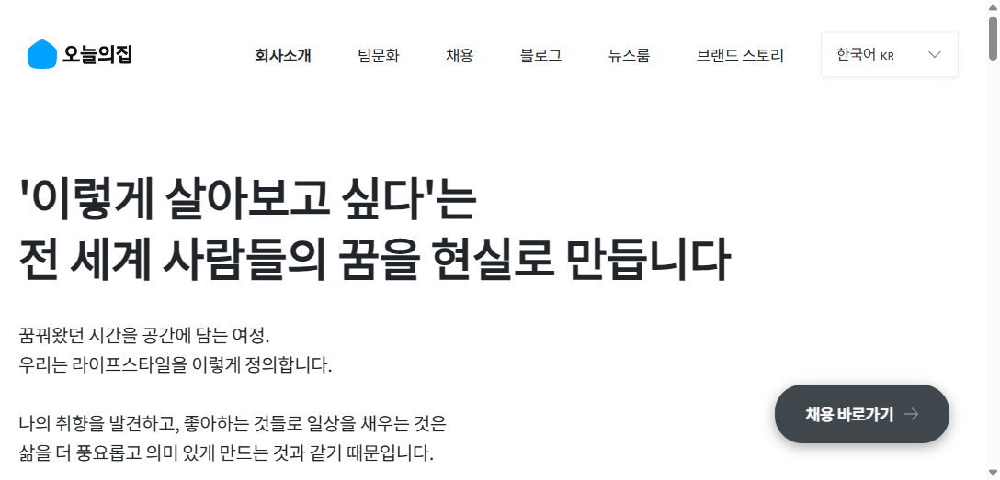
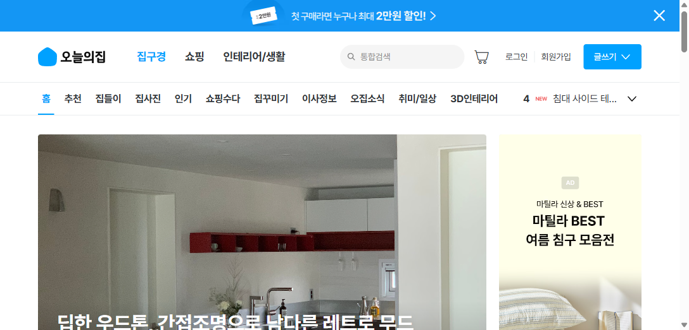

흑자 전환 이후 가려진 신규 유저 획득(UA)의 빈자리를 — 측정·콘텐츠·리텐션 세 개의 레버로 다시 채우는 그로스 전략

커머스(중개수수료·직매입) · 광고(리테일미디어, 고마진) · 시공중개(누적 거래액 1조+, 파트너 400곳). 일본·미국으로 역직구 확장 중.
하지만 성장의 '입구'(신규 유저 유입)에서 신호가 바뀌고 있습니다 — 다음 장에서 진단합니다.
MAU −37% · 국내 이커머스 침투율 약 44%로 포화
iOS ATT 옵트인율 15.9%(2024 Q1)까지 하락 → 타겟팅 정확도·라스트터치 기여도 측정이 무너지며 퍼포먼스 광고 효율이 구조적으로 악화.
집들이 UGC 1,200만건·앱 다운로드 3,000만+이라는 자산이 신규 모객 루프로 체계화되지 않음. 게다가 흑자 이후 자원은 시공·AI·결제 등 '수익화'로 쏠려 UA 재점화의 빈자리가 생김.
FB·IG·Google 중심에서 Kakao·Naver·TikTok까지 확장. 연령대별로 매체와 소재를 최적화하며 모객 볼륨의 천장을 밀어올림.
AppsFlyer 코호트 리포트로 7·14·28일 ROAS를 추적, 단기 전환단가가 아닌 LTV 기준으로 매체 믹스를 결정.
2021년부터 AppsFlyer Incrementality 테스트를 도입해 리마케팅 캠페인의 실제 증분 기여도를 측정.
시공(누적 1조+)·일본/미국·AI 엔드투엔드 공간 솔루션·오늘의집페이·리테일미디어로 수익 기반을 확장.
ATT 이후 신규 설치의 측정·타겟팅이 어려워지며, 글로벌 이커머스 광고비조차 UA→리마케팅으로 이동(iOS UA 비중 17%→8%). 신규 모객 자체는 여전히 둔화.
−147억 영업손실은 시공·결제·가구 등 신사업 투자처. 기존 유저의 객단가·전환을 높이는 데 무게가 실리며, UA 재점화의 전담 동력은 상대적으로 비어 있음.
1,200만 UGC와 1st party 데이터가 신규 모객(오가닉 유입·퍼널 전환)으로 체계적으로 환산되는 루프가 아직 설계돼 있지 않음.
정리하면 — "더 비싸진 모객을, 무너진 측정 위에서, 잠긴 자산을 두고 돌리는" 상황. 그래서 회사는 이 문제를 풀 사람을 찾고 있습니다.
채용공고(Growth Marketer · UA, 경력 5년+) 원문에서 읽은 회사의 진짜 요구 4가지
"월 예산 기획·배분" 필수 + 우대 "월 10억+ Paid 셀프서브 운영" — 실행자가 아니라 채널 P&L을 쥔 오너를 원함.
"1st Party Data + SQL", "퍼널별 성과 분석 → 지표 개선 액션 실행" — 분석을 남에게 맡기지 않고 직접 닫는 그로스 루프.
"MMP 택소노미·이벤트 설계, SDK/Pixel 연동, 기여도 분석", 우대 "iOS ATT 전략" — 측정 신뢰도를 직접 다루는 기술형 마케터.
우대 "디자인·CRM·개발 협업으로 신규 회원 온보딩·리텐션 개선" + 대행사·유관부서 조율 — 모객의 뒷단까지 책임.
1st party + 증분성 + MMM으로 '진짜 기여 채널'에 예산 재배분.
1,200만 집들이를 오가닉·SEO/GEO·Web-to-App 무료 모객 엔진으로.
이사 모멘트 공략 + CRM 리텐션으로 비싼 모객을 정당화.
USP — 세 전략 모두 오늘의집만 가진 자산(UGC · 1st party 데이터 · 이사 데이터)을 모객 레버로 전환합니다. 경쟁사가 따라 할 수 없는 구조.
ATT로 라스트터치가 무너진 환경 → 퍼스트파티 + 증분성(인크리멘탈리티) + MMM으로 실제 기여를 측정해 헛돈을 빼고 효율 채널에 재배분
이벤트 택소노미·서버사이드 정합으로 ATT 손실 보강
Geo-holdout·인크리멘탈리티로 채널별 진짜 기여 분리
미디어믹스모델링으로 상위 예산 의사결정
직접 쿼리한 대시보드로 매주 재배분 액션
"같은 예산으로 더 많은 진짜 신규 유저" — 증분 기준으로 비효율 채널을 걷어내고, 흑자 이후 늘릴 마케팅비를 근거 있게 집행.
집들이·리뷰 UGC를 프로그래매틱 SEO + GEO(생성형 엔진 최적화) + 숏폼으로 구조화해 비브랜드 유기 유입을 늘리고, Web-to-App 퍼널을 최적화해 그 트래픽을 앱 설치·첫구매로 전환.

인테리어 소비 의향이 가장 높은 이사·입주 모멘트(서비스 내 '이사정보' 탭 보유)를 고의향 세그먼트로 타겟. 모객 후엔 CRM 온보딩·푸시·레퍼럴로 첫구매·리텐션을 끌어올려 LTV가 더 높은 CAC를 정당화. 리테일미디어 광고매출로 모객비 일부를 자체 상쇄.
| 플레이어 | 모객 핵심 무기 | 못 가진 것 | UA 시사점 |
|---|---|---|---|
| 쿠팡 | 로켓배송·와우 락인(1,400만+) | 영감·커뮤니티·시공 연결 없음 | 속도는 못 이김 → 영감으로 차별 |
| 네이버 | 검색 트래픽 1위·AI 추천 | UGC 커뮤니티 없음 | 유기 검색은 협업·우회 영역 |
| 당근 | 하이퍼로컬·광고(흑자) | 신상 커머스·영감 없음 | 리테일미디어 수익화 모델 참고 |
| 무신사·29CM | 취향 큐레이션·스냅 UGC | 대형 가구·시공 없음 | UGC 모객은 직접 경쟁 영역 |
| 컬리 | 새벽배송·리빙 CNO 영입 | 영감·커뮤니티 없음 | 중가 큐레이션 공백 노림 |
| 한샘·이케아 | 오프라인·AI 플래닝 툴 | MAU·커뮤니티 열세 | 온라인 리드는 오늘의집 우위 |
| 오늘의집 | UGC 영감 + 시공 신뢰 + 이사 데이터 | — 셋을 모두 가진 유일한 플레이어 | 이 셋을 UA 레버로 결합 = USP |
빈틈(공백) = 누구도 'UGC 영감 · 시공 신뢰 · 이사 모멘트'를 동시에 신규 모객 엔진으로 결합하지 못함. 오늘의집만 세 자산을 다 가졌고, 그게 제 세 전략의 출발점입니다.
왜 이 NSM인가 — '설치 수'가 아니라 '증분으로 검증된 활성 유저당 LTV'를 보면, 측정·콘텐츠·리텐션 세 전략이 하나의 숫자로 묶입니다.
| JD가 요구한 것 | 제가 이미 한 것 |
|---|---|
| 1st Party Data + SQL | BigQuery로 실구매 코호트·CAC를 직접 산출, Airbridge+DB 교차 분석을 운영 |
| 인크리멘탈리티 / A/B 테스트 | RCT 인과 검증·증분성 실험을 직접 설계·집행 (등급제 인과효과 재검증 등) — JD '우대'를 디폴트로 수행 |
| MMP · 기여도 · SDK 이해 | Airbridge 라스트터치 한계를 인지·운영하며 Airbridge+BigQuery 크로스 검증 |
| 퍼포먼스 5년+ · 월 예산 기획/배분 | 커머스·뷰티 퍼포먼스 캠페인 예산을 자율 운영(5년차 그로스 마케터) |
| AI tool 활용 자동화 | 효율 시트 자동 갱신·리포트 자동화(작업스케줄러+스크립트)로 생산성 개선 |
| 앱 기반 이커머스 경험 | 커머스+뷰티 앱 마케팅 실무, CRM 협업 경험 보유 |
원칙 — 먼저 측정으로 신뢰를 세우고, 그 위에서 유입·리텐션을 실험합니다. 헛돈을 줄인 만큼을 검증된 모객에 재투자.
식은 모객 엔진을 다시 켜기에 이보다 좋은 조건은 없습니다. 저는 측정으로 헛돈을 줄이고, 콘텐츠로 무료 유입을 늘리고, 리텐션으로 비싼 모객을 정당화하는 일을 5년간 데이터로 해왔습니다. 오늘의집의 다음 곡선을, 입구에서부터 만들고 싶습니다.